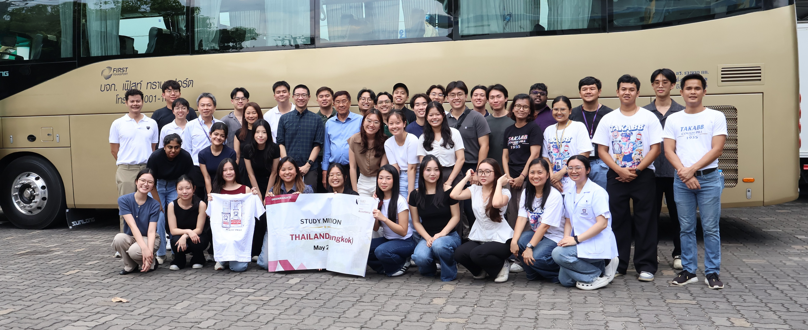
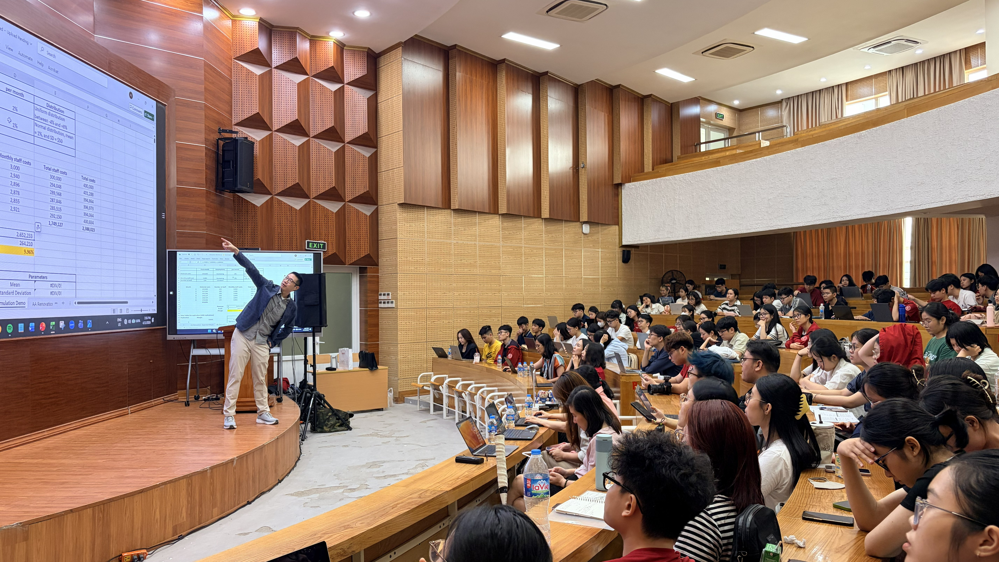

Excellent Teacher Award
University-level recognition from Singapore Management University.
Accounting educator, researcher, and academic leader
Senior Lecturer of Accounting and Director of the Master of Professional Accounting program at Singapore Management University.
About
I am a Senior Lecturer of Accounting and Director of the Master of Professional Accounting program at the School of Accountancy, Singapore Management University. My work centers on helping students build strong accounting foundations, connect technical concepts to professional judgment, and prepare for meaningful careers in business.
Prior to joining SMU, I received my PhD in Accounting and Master in Professional Accounting from the McCombs School of Business at the University of Texas at Austin. I also hold a BBA in Accounting from Thammasat University.
I am a Certified Management Accountant (CMA) and Certified in Strategy and Competitive Analysis (CSCA). I received the ICMA Board of Regents CMA Gold Medal Award and CSCA Gold Medal Award for achieving the highest exam scores globally.
University-level recognition from Singapore Management University.
Publication with Volker Laux on CEOs, compensation, and accounting manipulation.
Highest global scores for the Certified Management Accountant (CMA) and Certified in Strategy and Competitive Analysis (CSCA) examinations.
Teaching

A highly selective SMU-wide teaching award recognizing sustained excellence and impact in the classroom.
Awarded by the SMU School of Accountancy in 2020 and 2023 for outstanding contributions to undergraduate teaching.
Recognized by the SMU School of Accountancy every year from 2018-2025 and by the Lee Kong Chian School of Business every year from 2021-2025.
Speaking
I regularly speak with university and professional audiences on accounting education, management accounting, analytics, valuation, and professional development, including professional forums and webinars such as the Accounting & Business Show Asia and IMA Philippines Webinar.

Research
Publication
With Volker Laux. Journal of Accounting and Economics, 63(2-3), 253-261, 2017.
Publication
Business Education Innovation Journal, 15(2), 7-14, 2023.
Working Papers
Projects examine analysts' forecast deviation formats, investor judgments, and the incentive effects of individual versus group evaluation.
Service
Contact
60 Stamford Road, Level 5
Singapore 178900